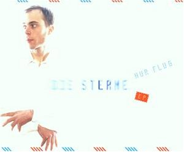

Hinweis: Die hier verzeichneten Liedtexte wurden von mir (molily) transkribiert und können Fehler enthalten. Freundliche Sternefans teilen mir etwaige Missverhörnisse bitte per Elektropost mit.
alles was wir reden
alles was wir treiben
du bist immer hier
doch du willst nicht bleiben
es kommt mir vor als wäre - weniger mehr
selten ist fair
vergossene tränen
verflossener wein
ich kann's nicht leiden
doch es muss wohl sein
es kommt mir vor als wäre - weniger mehr
selten ist fair
umsonstversuch und lieblingsscheitern
haufenweise selbstalarm
als ob wir uns in scherben [haben]
wir leben in mechaniktagen
überleben liebesleben
lieber nicht danebenliegen
möchtest du jetzt etwas sagen
wir leben in mechaniktagen
die maschinen voraus
zahnräder knirschen
hier spielt die musik
hier knacken die kirschen
alles herhörn weitersagen
wir leben in mechaniktagen
seh ich zum ersten mal dass du so schlecht aussiehst
weil du ein zwei dinge nicht auf die reihe kriegst
Refrain:
irgendein trottel könnte dir erklärn wie falsch du das siehst
es ist nicht deine schuld dass es nicht so läuft, dass das pech an dir klebt
vielleicht fühlst du dich jetzt eher leer
vielleicht morgen schon nicht mehr - so sehr
jeder trottel wird dir das erzähln
ich meine schau doch raus was gibt es da zu verstehn
fast alle haben schon mal bessere zeiten gesehn
(Refrain)
ich weiß nicht viel weil ich ja weiß dass ich selbst trottel bin
doch ich bin sicher weglaufen macht jetzt keinen sinn
(Refrain)